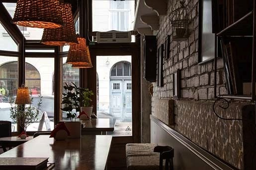

Your friendly neighborhood restaurant in the heart of Sai Ying Pun !
Who We Are
Lychee Café is a grassroots organization dedicated to serving healthy, homemade food made from unprocessed, local, sustainable and organic ingredients.
Our handmade, globally inspired menu consists of vegan salads and desserts, healthy soups and sandwiches, fresh-squeezed juices, organic pizza and pasta dishes, and organic baked European style goods made daily from scratch.
If you’re too busy to stop for a bite, you can still pick up something tasty at our small deli which sells homemade salad dressings, sweet breads, organic drinks and wine, among others.
Contact Us
Store Hours:
- Lunch (Monday to Friday): 11 a.m. to 2 p.m.
- Lunch (Saturday, Sunday, Public Holidays): 12 noon to 4 p.m.
- Dinner (Monday to Sunday): 6 p.m. to 10 p.m.
- Tea time (Monday to Friday): 2 p.m. to 6 p.m.
Phone: 5555-1212
Email: jennylim.it@gmail.com
Our Location:
15 Fuk Sau Lane, Sai Ying Pun, Hong Kong